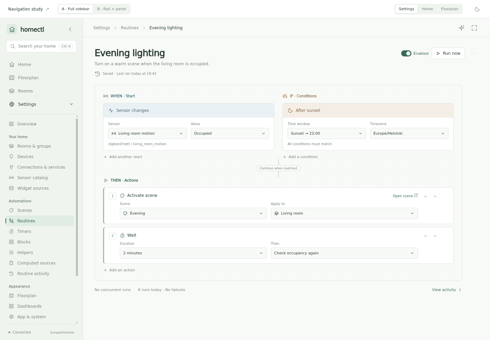
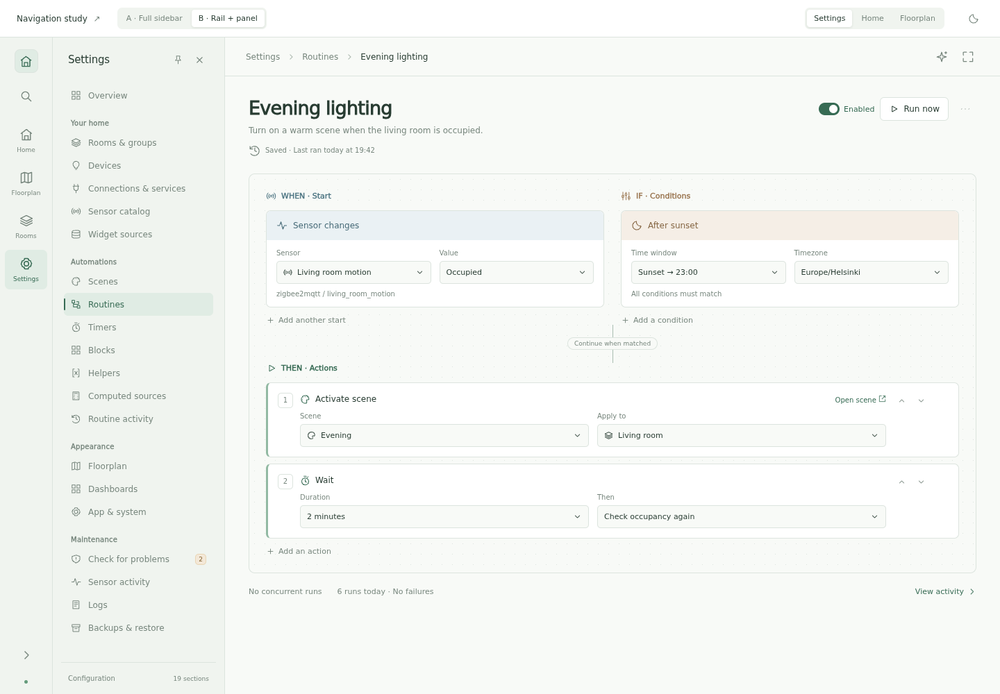
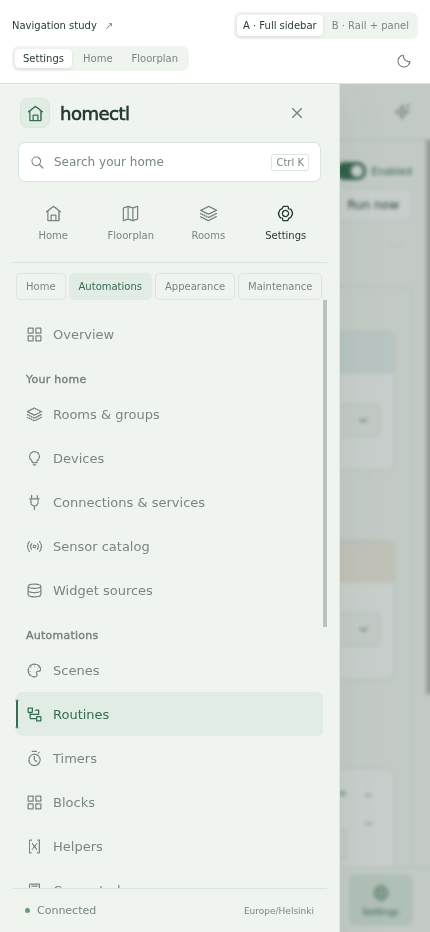
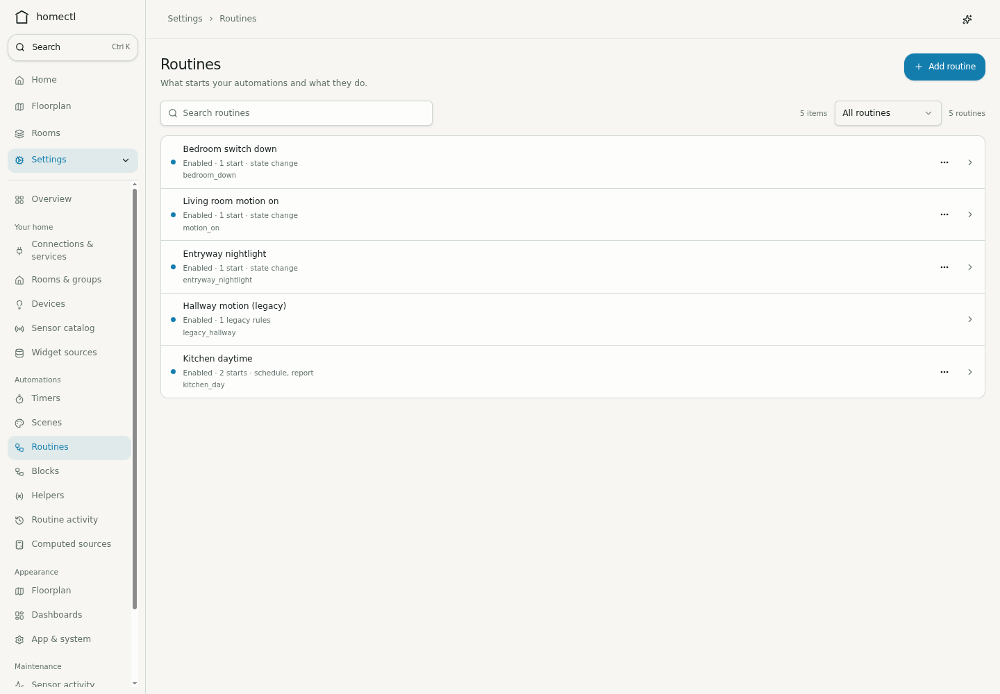

Shared navigation · concept study · 30 September 2026
A clearer way around homectl.
Two approaches to hierarchy, spacing and settings navigation. Both use
the approved Compact green/slate palette, consistent icons and the
same 19 settings sections. The surrounding screens are synthetic
examples for comparing the navigation.
ARefined full sidebar
Everyday pages first, settings below. A compact secondary list has
a single active row, quieter headings and consistent spacing.
Primary navigation and connection status stay fixed while settings
scroll.
244 px expanded · 76 px collapsed. Familiar and
easy to scan. Its settings list needs some scrolling because the
primary destinations share the same column.
Try collapse, search and settings navigation ↗

BCompact rail + settings panel
A stable rail carries the everyday destinations. Settings open
beside it, with much more vertical room for their categories. Pin
the panel for configuration sessions, or float it over the page.
76 px rail · 324 px with a pinned panel. All
settings fit at this desktop height. A pinned panel costs more
width; closing it gives that space back to the page.
Try pin, unpin and close ↗

One phone navigation for both.
Explicit labels and touch targets, with a compact strip of everyday
destinations above the settings list.

What changes in both concepts
-
Separate everyday navigation from the longer settings list.
Distinguish the parent section from the actual selected page.
-
Align every icon and label. Keep long names on one line at normal
desktop size; let text wrap when needed in the eventual app.
-
Order settings by purpose: rooms and devices first, then
connections; scenes and routines first within automations.
-
Keep the whole settings catalog reachable. Phone group shortcuts
jump directly to Home, Automations, Appearance or Maintenance.
-
Open navigation brings the current category into view. Close
dismisses the drawer; choosing a page closes it too.
-
Search remains global, with Ctrl+K and a single command palette.
-
Use the same navigation on the floorplan, routine editors,
dashboard and settings. Floorplan tabs remain in the phone AppBar
beside the assistant button.
Try the phone adaptation ↗
My initial preference: B for frequent configuration
and canvas work, with an unpinned panel by default; A for the
simpler, fully labeled everyday experience. They can share one
component and offer an explicit expanded/collapsed preference.
Check the other contexts.
The navigation should work with the content, rather than consume space
that an editor needs.
Current implementation · reference
The existing sidebar fills both the Settings parent and Routines
child, mixes primary and secondary row treatment, and wraps longer
names. These concepts make those levels more distinct.

Design review only. Navigation, search, disclosure, panel pinning, theme
previews and group shortcuts are interactive. Household data, counts and
timestamps are illustrative; no app configuration or physical devices
are changed.